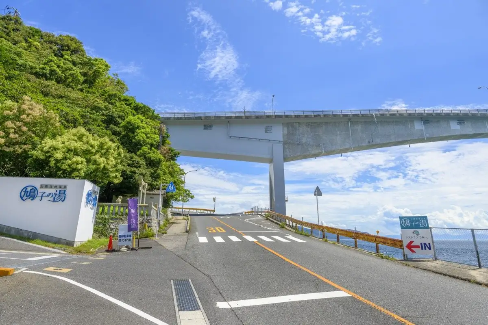
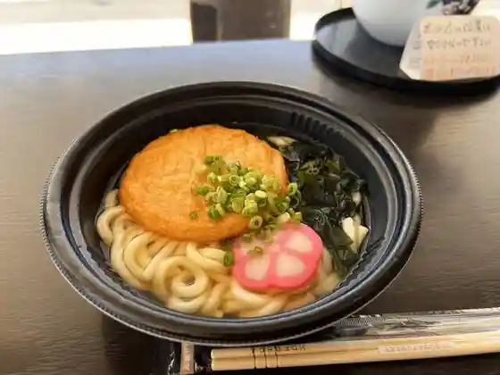
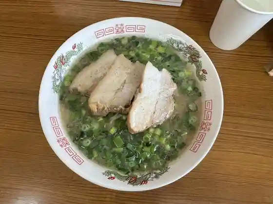
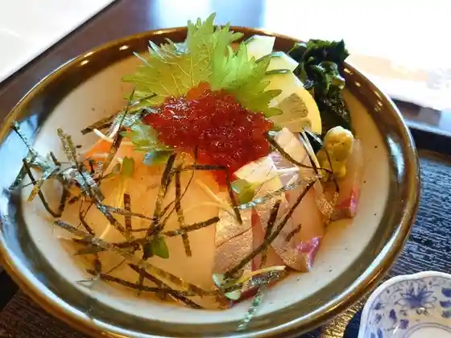
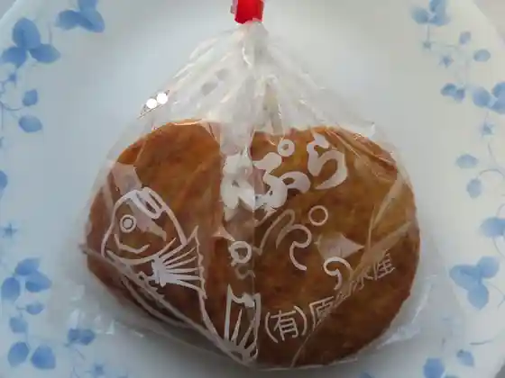
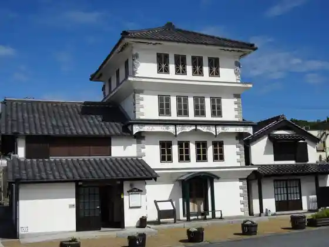
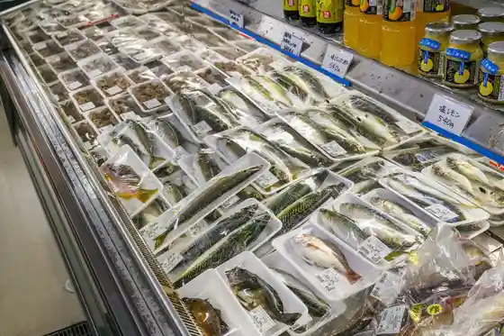
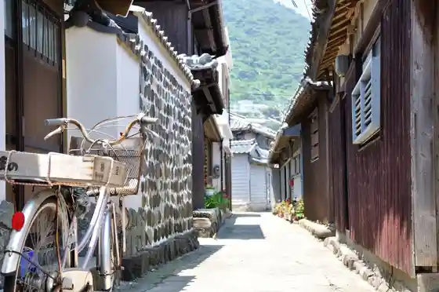

Japan / Yamaguchi / Kaminoseki
Kaminoseki
Kaminoseki · Yamaguchi
Kaminoseki
Highlighted on the Yamaguchi map.

Dining
田中旅館
田中旅館
カフェレストラン 瀬里家
カフェレストラン 瀬里家

道の駅 上関海峡
道の駅 上関海峡

中華そば 中津屋
中華そば 中津屋

レストラン うみべ。
レストラン うみべ。
上関水産 道の駅店
上関水産 道の駅店
鳩子の湯
鳩子の湯

原田水産
原田水産
レストラン上関海峡亭
レストラン上関海峡亭
おふくろ
おふくろ
漁宴
漁宴
岩田珈琲店
岩田珈琲店
古泉
古泉
菓舗 よこみち
菓舗 よこみち
SERIKA DEL MER
SERIKA DEL MER
銀波荘
銀波荘
ひさご食堂
ひさご食堂
くにひろ
くにひろ
ごはん屋 SHINDO
SHINDO
フィシッングハウス 芸陽
フィシッングハウス 芸陽
カイキョー館
カイキョー館
みさき旅館
みさき旅館
Michi No Eki Kaminoseki Kaikyo
Michi No Eki Kaminoseki Kaikyo
Kakigoya Marumi Suisan
Kakigoya Marumi Suisan
Tanaka Ryokan
Tanaka Ryokan
Koiwai Shokudo
Koiwai Shokudo
Iwata Cafe
Iwata Cafe
Ofukuro
Ofukuro
Sights
Kaminoseki Kaikyo Onsen Hatoko Baths
Yonkai Ro

Roadside Station Kaminoseki Kaikyo

Shuku Shima

Ue Sakariyama Lookout
Kaminoseki
Shiroyama Rekishi Park
Kochi Zu Wo Katate Nimachiwo Aruko U (Nagashima Hen)
Kaminoseki Bridge
Kochi Zu Wo Katate Nimachiwo Aruko U (Murotsu Hen)
Murotsu
Ko Za Yama
Kaminoseki Kaikyo
Kaminoseki Hodai Ato (Murotsu Hiyoriyama, Nagashima Higashiyama)
Tsune Man Tera no Dai Icho
Yashima
O Ase Kannon
Kyu Kaminoseki Bansho
Naka no Ura Seaside Park
Kaminoseki Kyodoshi Gakushu Kan
Seiho Tera
Yoshida Shoin Shihi
Hana Misao Shima
Ogata Ken Kuro no Haka, Ogata City Uemon no Haka, Ogata Kotoku Kun Hi
Go Kyo no Yado Higo Ya Ato
Takahashi Rihe no Haka
Yoshida Shoin Yosho Ho City Uemon Bokuto Mei no Hi
Kaminoseki Town Hall